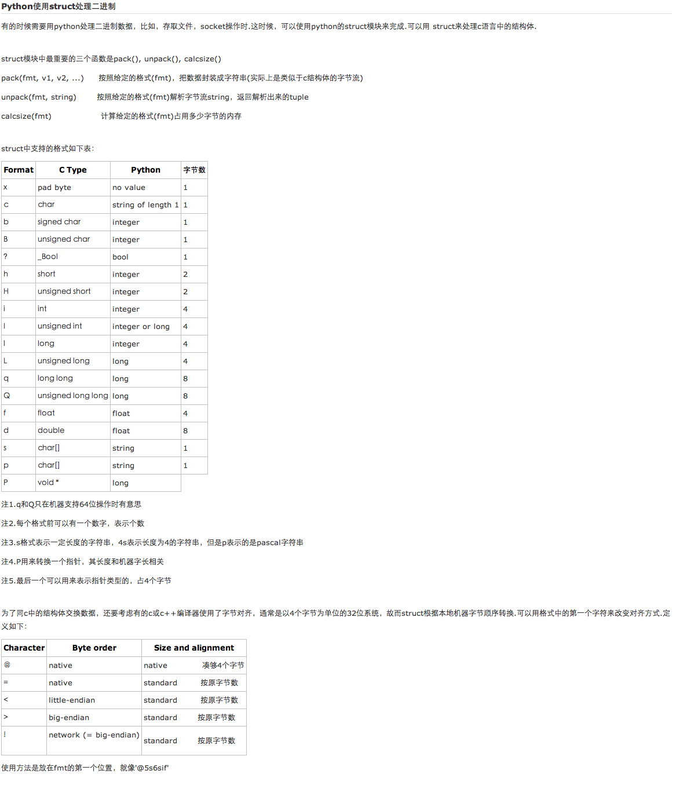

python
Table of Contents
#+TITLE Python 笔记
1 shelve
import shelve instanceName = shelve.open('fileName') print 1+1 ##use instanceName['key'], can assert the data.
2 instance.method(arg1, arg2) 等价于 class.method(instance, arg1, arg2)
3 安装mysqldb
3.1 下载mysqldb
3.2 在mysqldb目录中，修改setupposix.py其中的 mysqlconfig.path为mysqlconfig的路径。
3.2.1 可以使用whereis mysql来查找到mysql的安装目录。
3.3 执行 python setup.py build
3.4 执行 python setup.py install
3.5 测试 mysqldb
3.5.1 在命令行执行python
3.5.2 import MySQLdb 没问题就是安装成功了。
4 查找python 模块的方法
4.1 python
4.2 import 模块名称
4.3 dir(模块名称)
会列出模块可用的方法，一般再使用 _path_就会列出模块的位置
5 查找python的位置
5.1 python
5.2 import sys
5.3 sys.path
6 ctypes
ctypes基本数据类型映射表 参数类型预先设定好，或者在调用函数时再把参数转成相应的c***类型。ctypes的类型对应如下:
| ctypes type | C type | Python Type |
| cchar | char | 1-character string |
| cwchar | wchart | 1-character unicode string |
| cbyte | char | int/long |
| cubyte | unsigned char | int/long |
| cbool | bool | bool |
| cshort | short | int/long |
| cushort | unsigned short | int/long |
| cint | int | int/long |
| cuint | unsigned int | int/long |
| clong | long | int/long |
| culong | unsigned long | int/long |
| clonglong | _int64 or longlong | int/long |
| culonglong | unsigned _int64 or unsigned long long | int/long |
| cfloat | float | float |
| cdouble | double | float |
| clongdouble | long double float | float |
| ccharp | char * | string or None |
| cwcharp | wchart * | unicode or None |
| cvoidp | void * | int/long or None |
7 struct
